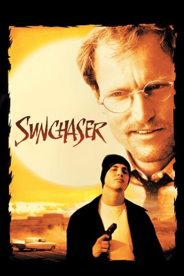
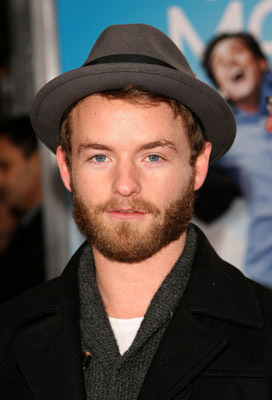

#10574 The Sunchaser - Die Suche nach dem heiligen Berg
Alternativ: The Sunchaser (Englischer Titel)
 
 IMDB-Wertung: 6.2 / 10
IMDB-Wertung: 6.2 / 10  Metascore: 0
Metascore: 0 
"Dr. Michael Reynolds: Ein Top-Arzt in Los Angeles, auf dem Höhepunkt seiner Karriere. Doch dann läuft ihm ein Schwerverbrecher über den Weg - der nichts mehr zu verlieren hat. Nach einem Kidnapping kommt es zu einer dramatischen Odyssee durch die USA, mit einem äußerst ungewöhnlichen Ziel. Für Reynolds beginnt ein grauenhafter Alptraum..."
Jahr: 1996
Dauer: 117 Minuten
FSK:
Land: USA Studio: Warner Bros.Tonspuren: DD5.1 - ,
Untertitel:
Auflösung: 1080p (1920x816) Größe: 4730 MB
Genre: Drama, Krimi
Regisseur: Michael Cimino
Drehbuch: Charles Leavitt
Soundtrack: Maurice Jarre
Darsteller:
 Woody Harrelson als Dr. Michael Reynolds
Woody Harrelson als Dr. Michael Reynolds Jon Seda als Brandon 'Blue' Monroe
Jon Seda als Brandon 'Blue' Monroe Anne Bancroft als Dr. Renata Baumbauer
Anne Bancroft als Dr. Renata Baumbauer- Alexandra Tydings als Victoria Reynolds
- Matt Mulhern als Dr. Chip Byrnes
- Talisa Soto als Navajo Woman
 Lawrence Pressman als Agent in Charge Collier
Lawrence Pressman als Agent in Charge Collier Michael O'Neill als Agent Moreland
Michael O'Neill als Agent Moreland Harry Carey Jr. als Cashier
Harry Carey Jr. als Cashier- Carmen Dell'Orefice als Arabella
- Andrea Roth als Head Nurse
 Bob Minor als Deputy Lynch
Bob Minor als Deputy Lynch- Sal Landi als Deputy #2
- Kelly Perine als Fellow in Oncology
- Andy Berman als Fellow in Oncology
-  Christopher Masterson als Jimmy Reynolds
 Antwon Tanner als Smokes
Antwon Tanner als Smokes Mickey Jones als Fuzzy, Biker #1
Mickey Jones als Fuzzy, Biker #1 Gregory Scott Cummins als Biker #2
Gregory Scott Cummins als Biker #2 Elaine Kagan als Woman at Gas Station
Elaine Kagan als Woman at Gas Station- Brian Bossetta als Hospital Security Guard
- Brett Harrelson als Younger Highway Patrol Officer
- Zoe Trilling als Mini-Mart Cashier
 Robert Downey Sr. als Telephone Voices
Robert Downey Sr. als Telephone Voices- Richard Bauer als Dr. Bradford
- Victor Aaron als Webster Skyhorse
- Brooke Ashley als Calantha Reynolds
- Harper Roisman als Mr. Vogel
- Kirsten Getchell als Sally Byrnes
- Emil Alexander als Walter
- John Christian Graas als Young Michael Reynolds
- Pam Morton als Herself
- Linda M. Duenas als Hot Mexican Waitress
- Tony Epper als Hay Hauler
- Douglas B. Hall als State Trooper
- Dan B. Pastre als State Trooper
- Robert 'Bobby Z' Zajonc als FBI Helicopter Pilot
- Jeri Arredondo als Hospital Pharmacist
- Cynthia Allison als CNN Reporter
- Carolyn Tomlin als Hospital Spokesperson
- Brian K. Francis als Navajo Boy
- Alan Keller als Older Highway Patrol Officer
- Betty Carvalho als Rosa
- Matthew Abe als Surgeon
- Eugene Boggs als Surgeon
- Philip Zachary als Disc Jockey
- David Green als First Inmate
- Askia Won-Ling Jacob als UCLA Student
Datei: X:\1996\Sunchaser - Die Suche nach dem heiligen Berg, The (1996, FSK, 1920x816).mkv seit 21.01.2019
Festplatte: HD 1996-2002
 Es gibt insgesamt 78 Filme in der Gruppe '1996'
Es gibt insgesamt 78 Filme in der Gruppe '1996'